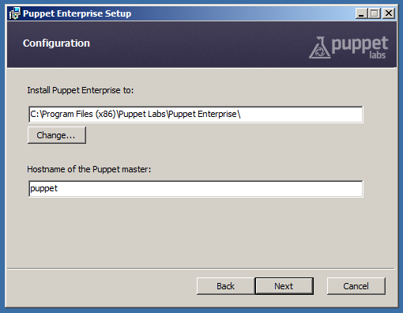
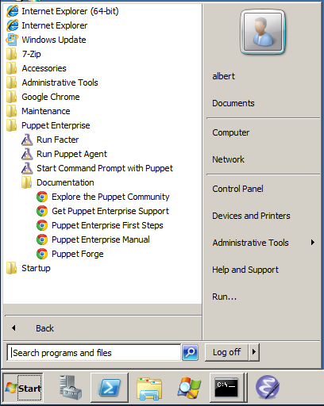

Installing Windows Agents
This chapter refers to Windows functionality. To install PE on *nix nodes, see Installing Puppet Enterprise.
PE includes support for Windows agent nodes on Windows 2003, 2008, 7, and 2012 Server. Windows nodes:
- Can fetch configurations from a puppet master and apply manifests locally
- Can respond to live management or orchestration commands
- Cannot serve as a puppet master, console, or database support server
See the main Puppet on Windows documentation for details on running Puppet on Windows and writing manifests for Windows.
In particular, note that puppet must be run with elevated privileges (a.k.a., “Run as administrator”), as explained in this section on Windows Security Context.
Installing Puppet
To install Puppet Enterprise on a Windows node, simply download and run the installer, which is a standard Windows .msi package and will run as a graphical wizard.
The installer must be run with elevated privileges. Installing Puppet does not require a system reboot.
The only information you need to specify during installation is the hostname of your puppet master server:

After Installation
Once the installer finishes:
- A puppet agent will be running as a Windows service, and will fetch and apply configurations every 30 minutes (by default). You can now assign classes to the node using your puppet master or console server. After the first puppet run, the MCollective service will also be running and the node can now be controlled with live management and orchestration. The puppet agent service and the MCollective service can be started and stopped independently using either the service control manager GUI or the command line
sc.exeutility; see Running Puppet on Windows for more details. -
The Start Menu will contain a Puppet folder, with shortcuts for running the puppet agent manually, running Facter, and opening a command prompt for use with the Puppet tools. See Running Puppet on Windows for more details.

Automated Installation
For automated deployments, Puppet can be installed unattended on the command line as follows:
msiexec /qn /i puppet.msi
You can also specify /l*v install.txt to log the installation’s progress to a text file.
The following public MSI properties can also be specified:
| MSI Property | Puppet Setting | Default Value |
|---|---|---|
INSTALLDIR |
n/a | Version-dependent, see below |
PUPPET_MASTER_SERVER |
server |
puppet |
PUPPET_CA_SERVER |
ca_server |
Value of PUPPET_MASTER_SERVER |
PUPPET_AGENT_CERTNAME |
certname |
Value of facter fdqn (must be lowercase) |
For example:
msiexec /qn /i puppet.msi PUPPET_MASTER_SERVER=puppet.acme.com
Upgrading
Upgrading Windows agents is done by simply running the new 3.0 version of the MSI package. There’s no need to uninstall the previous version. No extra steps are required, and the installer will handle stopping and re-starting the puppet agent service.
When upgrading, the installer will not replace any settings in the main puppet.conf configuration file, but it can add previously unspecified settings if they are provided on the command line.
Uninstalling
Puppet can be uninstalled through Windows’ standard “Add or Remove Programs” interface or from the command line.
To uninstall from the command line, you must have the original MSI file or know the ProductCode of the installed MSI:
msiexec /qn /x [puppet.msi|product-code]
Uninstalling will remove Puppet’s program directory, the puppet agent service, and all related registry keys. It will leave the data directory intact, including any SSL keys. To completely remove Puppet from the system, the data directory can be manually deleted.
Installation Details
What Gets Installed
In order to provide a self-contained installation, the Puppet installer includes all of Puppet’s dependencies, including Ruby, Gems, and Facter. (Puppet redistributes the 32-bit Ruby application from rubyinstaller.org. MCollective is also installed.
These prerequisites are used only for Puppet Enterprise components and do not interfere with other local copies of Ruby.
Program Directory
Unless overridden during installation, Puppet and its dependencies are installed into the standard Program Files directory for 32-bit applications and the Program Files(x86) directory for 64-bit applications.
Puppet Enterprise’s default installation path is:
| OS type | Default Install Path |
|---|---|
| 32-bit | C:\Program Files\Puppet Labs\Puppet Enterprise |
| 64-bit | C:\Program Files (x86)\Puppet Labs\Puppet Enterprise |
The Program Files directory can be located using the PROGRAMFILES environment variable on 32-bit versions of Windows or the PROGRAMFILES(X86) variable on 64-bit versions.
Puppet’s program directory contains the following subdirectories:
| Directory | Description |
|---|---|
| bin | scripts for running Puppet and Facter |
| facter | Facter source |
| hiera | Hiera source |
| mcollective | MCollective source |
| mcollective_plugins | plugins used by MCollective |
| misc | resources |
| puppet | Puppet source |
| service | code to run puppet agent as a service |
| sys | Ruby and other tools |
Data Directory
Puppet Enterprise and its components store settings (puppet.conf), manifests, and generated data (like logs and catalogs) in the data directory.
When run with elevated privileges — Puppet’s intended state — the data directory is located in the COMMON_APPDATA folder. This folder’s location varies by Windows version:
| OS Version | Path | Default |
|---|---|---|
| 2003 | %ALLUSERSPROFILE%\Application Data\PuppetLabs\puppet |
C:\Documents and Settings\All Users\Application Data\PuppetLabs\ |
| 7, 2008, 2012 | %PROGRAMDATA%\PuppetLabs\ |
C:\ProgramData\PuppetLabs\ |
Since the CommonAppData directory is a system folder, it is hidden by default. See http://support.microsoft.com/kb/812003 for steps to show system and hidden files and folders.
If Puppet is run without elevated privileges, it will use a .puppet directory in the current user’s home folder as its data directory. This may result in Puppet having unexpected settings.
Puppet’s data directory contains subdirectories for the various components (facter, MCollective, etc.):
etccontains configuration files, manifests, certificates, and other important filesvarcontains generated data and logs
More
For more details about using Puppet on Windows, see: